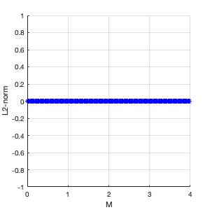
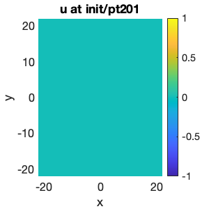
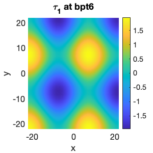
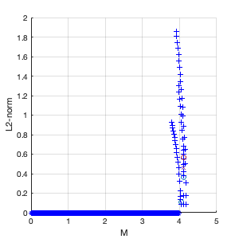
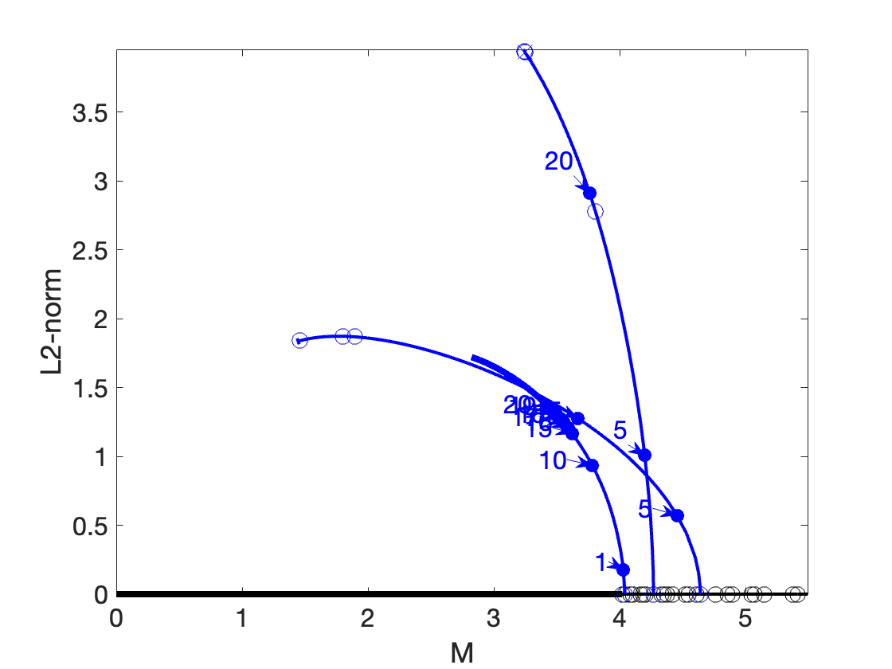
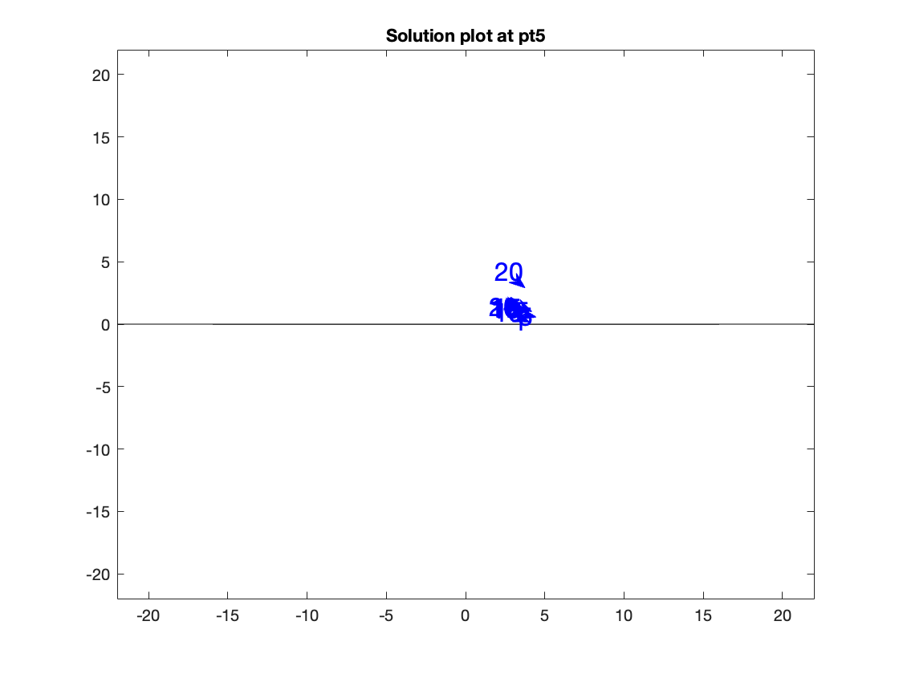

Contents
- main command file for the bifurcation analysis of a ---2D--- thermocapillary thin-film equation
- clear mainspace (keep paths for pde2path) and close all plot windows
- c1: init and set parameters
- c2: continuation of the trivial branch
- c3: switch branch to periodic bifurcation branches and continue
- c6: plot bifurcation diagram
- c7 : plot solutions
main command file for the bifurcation analysis of a ---2D--- thermocapillary thin-film equation
The command file performs a numerical continuation of the second order equation 0 = \Delta h - (g(1+h)-(3/2)*M*(log((1+h)/(2+h))+1/(2+h))+K(0)+lambda Here, h is the fluid height, g is the gravitation constant, M is the Marangoni number (the primary bifurcation parameter), lambda is a constaint to conserve the mass of the bifurcating solution.
%%%%%%%%%%%%%%%%%%%% NOTE K and h here are -MK and v in the analysis %%%%%%%%%%%%%%%%%%%% TYPO h should be v % % The numerical continuation is performed with pde2path with Neuman % boundary conditions on a domain (-lx,lx)x(-ly,ly).
clear mainspace (keep paths for pde2path) and close all plot windows
clc; close all; keep pphome; % set to 1 to save plotted figures as eps saveFigures = 0; % set to 1 to save plot data saveData = 0;
c1: init and set parameters
p = []; lx = [7*pi 7*pi]; % set domain size nx = [30 30]; % number of discretisation points per dimension in domain Minit = 0; % initial Marangoni number ginit = 1; % set gravitiy constant lambdaInit = 0; % set initial integration constant (lambda = K - K(0)) par = [Minit, ginit, lambdaInit]; p = tfinit(p,lx,nx,par); p = setfn(p,'init'); para = 1; % set Marangoni number as bifurcation parameter p.nc.dsmax=0.03;%%%%%%%%%%%%%%%%%%%% copied %adapted until here
Problem directory name: init

c2: continuation of the trivial branch
p = cont(p,200);%%%%%%%%%%%%%%%%%%%% 90 not enough
step M L2-norm residual iter meth ds #-EV b(0) inistep 0 0.000e+00 0.000e+00 0.00e+00 0 nat 0.000e+00 0 0.000e+00 1 0.000e+00 0.000e+00 0.00e+00 0 nat -0.00100 0 0.000e+00 2 0.00100 0.000e+00 0.00e+00 0 nat 0.00100 0 0.000e+00 3 0.01100 0.000e+00 0.00e+00 0 nat 0.01000 0 0.000e+00 4 0.03101 0.000e+00 0.00e+00 0 nat 0.02000 0 0.000e+00 5 0.05101 0.000e+00 0.00e+00 0 nat 0.02000 0 0.000e+00 6 0.07102 0.000e+00 0.00e+00 0 nat 0.02000 0 0.000e+00 7 0.09103 0.000e+00 0.00e+00 0 nat 0.02000 0 0.000e+00 8 0.11103 0.000e+00 0.00e+00 0 nat 0.02000 0 0.000e+00 9 0.13104 0.000e+00 0.00e+00 0 nat 0.02000 0 0.000e+00 10 0.15104 0.000e+00 0.00e+00 0 nat 0.02000 0 0.000e+00 11 0.17105 0.000e+00 0.00e+00 0 nat 0.02000 0 0.000e+00 12 0.19105 0.000e+00 0.00e+00 0 nat 0.02000 0 0.000e+00 13 0.21106 0.000e+00 0.00e+00 0 nat 0.02000 0 0.000e+00 14 0.23106 0.000e+00 0.00e+00 0 nat 0.02000 0 0.000e+00 15 0.25107 0.000e+00 0.00e+00 0 nat 0.02000 0 0.000e+00 16 0.27108 0.000e+00 0.00e+00 0 nat 0.02000 0 0.000e+00 17 0.29108 0.000e+00 0.00e+00 0 nat 0.02000 0 0.000e+00 18 0.31109 0.000e+00 0.00e+00 0 nat 0.02000 0 0.000e+00 19 0.33109 0.000e+00 0.00e+00 0 nat 0.02000 0 0.000e+00 20 0.35110 0.000e+00 0.00e+00 0 nat 0.02000 0 0.000e+00 21 0.37110 0.000e+00 0.00e+00 0 nat 0.02000 0 0.000e+00 22 0.39111 0.000e+00 0.00e+00 0 nat 0.02000 0 0.000e+00 23 0.41111 0.000e+00 0.00e+00 0 nat 0.02000 0 0.000e+00 24 0.43112 0.000e+00 0.00e+00 0 nat 0.02000 0 0.000e+00 25 0.45113 0.000e+00 0.00e+00 0 nat 0.02000 0 0.000e+00 26 0.47113 0.000e+00 0.00e+00 0 nat 0.02000 0 0.000e+00 27 0.49114 0.000e+00 0.00e+00 0 nat 0.02000 0 0.000e+00 28 0.51114 0.000e+00 0.00e+00 0 nat 0.02000 0 0.000e+00 29 0.53115 0.000e+00 0.00e+00 0 nat 0.02000 0 0.000e+00 30 0.55115 0.000e+00 0.00e+00 0 nat 0.02000 0 0.000e+00 31 0.57116 0.000e+00 0.00e+00 0 nat 0.02000 0 0.000e+00 32 0.59116 0.000e+00 0.00e+00 0 nat 0.02000 0 0.000e+00 33 0.61117 0.000e+00 0.00e+00 0 nat 0.02000 0 0.000e+00 34 0.63118 0.000e+00 0.00e+00 0 nat 0.02000 0 0.000e+00 35 0.65118 0.000e+00 0.00e+00 0 nat 0.02000 0 0.000e+00 36 0.67119 0.000e+00 0.00e+00 0 nat 0.02000 0 0.000e+00 37 0.69119 0.000e+00 0.00e+00 0 nat 0.02000 0 0.000e+00 38 0.71120 0.000e+00 0.00e+00 0 nat 0.02000 0 0.000e+00 39 0.73120 0.000e+00 0.00e+00 0 nat 0.02000 0 0.000e+00 40 0.75121 0.000e+00 0.00e+00 0 nat 0.02000 0 0.000e+00 41 0.77121 0.000e+00 0.00e+00 0 nat 0.02000 0 0.000e+00 42 0.79122 0.000e+00 0.00e+00 0 nat 0.02000 0 0.000e+00 43 0.81123 0.000e+00 0.00e+00 0 nat 0.02000 0 0.000e+00 44 0.83123 0.000e+00 0.00e+00 0 nat 0.02000 0 0.000e+00 45 0.85124 0.000e+00 0.00e+00 0 nat 0.02000 0 0.000e+00 46 0.87124 0.000e+00 0.00e+00 0 nat 0.02000 0 0.000e+00 47 0.89125 0.000e+00 0.00e+00 0 nat 0.02000 0 0.000e+00 48 0.91125 0.000e+00 0.00e+00 0 nat 0.02000 0 0.000e+00 49 0.93126 0.000e+00 0.00e+00 0 nat 0.02000 0 0.000e+00 50 0.95126 0.000e+00 0.00e+00 0 nat 0.02000 0 0.000e+00 51 0.97127 0.000e+00 0.00e+00 0 nat 0.02000 0 0.000e+00 52 0.99128 0.000e+00 0.00e+00 0 nat 0.02000 0 0.000e+00 53 1.01128 0.000e+00 0.00e+00 0 nat 0.02000 0 0.000e+00 54 1.03129 0.000e+00 0.00e+00 0 nat 0.02000 0 0.000e+00 55 1.05129 0.000e+00 0.00e+00 0 nat 0.02000 0 0.000e+00 56 1.07130 0.000e+00 0.00e+00 0 nat 0.02000 0 0.000e+00 57 1.09130 0.000e+00 0.00e+00 0 nat 0.02000 0 0.000e+00 58 1.11131 0.000e+00 0.00e+00 0 nat 0.02000 0 0.000e+00 59 1.13131 0.000e+00 0.00e+00 0 nat 0.02000 0 0.000e+00 60 1.15132 0.000e+00 0.00e+00 0 nat 0.02000 0 0.000e+00 61 1.17133 0.000e+00 0.00e+00 0 nat 0.02000 0 0.000e+00 62 1.19133 0.000e+00 0.00e+00 0 nat 0.02000 0 0.000e+00 63 1.21134 0.000e+00 0.00e+00 0 nat 0.02000 0 0.000e+00 64 1.23134 0.000e+00 0.00e+00 0 nat 0.02000 0 0.000e+00 65 1.25135 0.000e+00 0.00e+00 0 nat 0.02000 0 0.000e+00 66 1.27135 0.000e+00 0.00e+00 0 nat 0.02000 0 0.000e+00 67 1.29136 0.000e+00 0.00e+00 0 nat 0.02000 0 0.000e+00 68 1.31136 0.000e+00 0.00e+00 0 nat 0.02000 0 0.000e+00 69 1.33137 0.000e+00 0.00e+00 0 nat 0.02000 0 0.000e+00 70 1.35138 0.000e+00 0.00e+00 0 nat 0.02000 0 0.000e+00 71 1.37138 0.000e+00 0.00e+00 0 nat 0.02000 0 0.000e+00 72 1.39139 0.000e+00 0.00e+00 0 nat 0.02000 0 0.000e+00 73 1.41139 0.000e+00 0.00e+00 0 nat 0.02000 0 0.000e+00 74 1.43140 0.000e+00 0.00e+00 0 nat 0.02000 0 0.000e+00 75 1.45140 0.000e+00 0.00e+00 0 nat 0.02000 0 0.000e+00 76 1.47141 0.000e+00 0.00e+00 0 nat 0.02000 0 0.000e+00 77 1.49141 0.000e+00 0.00e+00 0 nat 0.02000 0 0.000e+00 78 1.51142 0.000e+00 0.00e+00 0 nat 0.02000 0 0.000e+00 79 1.53143 0.000e+00 0.00e+00 0 nat 0.02000 0 0.000e+00 80 1.55143 0.000e+00 0.00e+00 0 nat 0.02000 0 0.000e+00 81 1.57144 0.000e+00 0.00e+00 0 nat 0.02000 0 0.000e+00 82 1.59144 0.000e+00 0.00e+00 0 nat 0.02000 0 0.000e+00 83 1.61145 0.000e+00 0.00e+00 0 nat 0.02000 0 0.000e+00 84 1.63145 0.000e+00 0.00e+00 0 nat 0.02000 0 0.000e+00 85 1.65146 0.000e+00 0.00e+00 0 nat 0.02000 0 0.000e+00 86 1.67146 0.000e+00 0.00e+00 0 nat 0.02000 0 0.000e+00 87 1.69147 0.000e+00 0.00e+00 0 nat 0.02000 0 0.000e+00 88 1.71148 0.000e+00 0.00e+00 0 nat 0.02000 0 0.000e+00 89 1.73148 0.000e+00 0.00e+00 0 nat 0.02000 0 0.000e+00 90 1.75149 0.000e+00 0.00e+00 0 nat 0.02000 0 0.000e+00 91 1.77149 0.000e+00 0.00e+00 0 nat 0.02000 0 0.000e+00 92 1.79150 0.000e+00 0.00e+00 0 nat 0.02000 0 0.000e+00 93 1.81150 0.000e+00 0.00e+00 0 nat 0.02000 0 0.000e+00 94 1.83151 0.000e+00 0.00e+00 0 nat 0.02000 0 0.000e+00 95 1.85151 0.000e+00 0.00e+00 0 nat 0.02000 0 0.000e+00 96 1.87152 0.000e+00 0.00e+00 0 nat 0.02000 0 0.000e+00 97 1.89153 0.000e+00 0.00e+00 0 nat 0.02000 0 0.000e+00 98 1.91153 0.000e+00 0.00e+00 0 nat 0.02000 0 0.000e+00 99 1.93154 0.000e+00 0.00e+00 0 nat 0.02000 0 0.000e+00 100 1.95154 0.000e+00 0.00e+00 0 nat 0.02000 0 0.000e+00 101 1.97155 0.000e+00 0.00e+00 0 nat 0.02000 0 0.000e+00 102 1.99155 0.000e+00 0.00e+00 0 nat 0.02000 0 0.000e+00 103 2.01156 0.000e+00 0.00e+00 0 nat 0.02000 0 0.000e+00 104 2.03156 0.000e+00 0.00e+00 0 nat 0.02000 0 0.000e+00 105 2.05157 0.000e+00 0.00e+00 0 nat 0.02000 0 0.000e+00 106 2.07158 0.000e+00 0.00e+00 0 nat 0.02000 0 0.000e+00 107 2.09158 0.000e+00 0.00e+00 0 nat 0.02000 0 0.000e+00 108 2.11159 0.000e+00 0.00e+00 0 nat 0.02000 0 0.000e+00 109 2.13159 0.000e+00 0.00e+00 0 nat 0.02000 0 0.000e+00 110 2.15160 0.000e+00 0.00e+00 0 nat 0.02000 0 0.000e+00 111 2.17160 0.000e+00 0.00e+00 0 nat 0.02000 0 0.000e+00 112 2.19161 0.000e+00 0.00e+00 0 nat 0.02000 0 0.000e+00 113 2.21161 0.000e+00 0.00e+00 0 nat 0.02000 0 0.000e+00 114 2.23162 0.000e+00 0.00e+00 0 nat 0.02000 0 0.000e+00 115 2.25163 0.000e+00 0.00e+00 0 nat 0.02000 0 0.000e+00 116 2.27163 0.000e+00 0.00e+00 0 nat 0.02000 0 0.000e+00 117 2.29164 0.000e+00 0.00e+00 0 nat 0.02000 0 0.000e+00 118 2.31164 0.000e+00 0.00e+00 0 nat 0.02000 0 0.000e+00 119 2.33165 0.000e+00 0.00e+00 0 nat 0.02000 0 0.000e+00 120 2.35165 0.000e+00 0.00e+00 0 nat 0.02000 0 0.000e+00 121 2.37166 0.000e+00 0.00e+00 0 nat 0.02000 0 0.000e+00 122 2.39166 0.000e+00 0.00e+00 0 nat 0.02000 0 0.000e+00 123 2.41167 0.000e+00 0.00e+00 0 nat 0.02000 0 0.000e+00 124 2.43168 0.000e+00 0.00e+00 0 nat 0.02000 0 0.000e+00 125 2.45168 0.000e+00 0.00e+00 0 nat 0.02000 0 0.000e+00 126 2.47169 0.000e+00 0.00e+00 0 nat 0.02000 0 0.000e+00 127 2.49169 0.000e+00 0.00e+00 0 nat 0.02000 0 0.000e+00 128 2.51170 0.000e+00 0.00e+00 0 nat 0.02000 0 0.000e+00 129 2.53170 0.000e+00 0.00e+00 0 nat 0.02000 0 0.000e+00 130 2.55171 0.000e+00 0.00e+00 0 nat 0.02000 0 0.000e+00 131 2.57171 0.000e+00 0.00e+00 0 nat 0.02000 0 0.000e+00 132 2.59172 0.000e+00 0.00e+00 0 nat 0.02000 0 0.000e+00 133 2.61173 0.000e+00 0.00e+00 0 nat 0.02000 0 0.000e+00 134 2.63173 0.000e+00 0.00e+00 0 nat 0.02000 0 0.000e+00 135 2.65174 0.000e+00 0.00e+00 0 nat 0.02000 0 0.000e+00 136 2.67174 0.000e+00 0.00e+00 0 nat 0.02000 0 0.000e+00 137 2.69175 0.000e+00 0.00e+00 0 nat 0.02000 0 0.000e+00 138 2.71175 0.000e+00 0.00e+00 0 nat 0.02000 0 0.000e+00 139 2.73176 0.000e+00 0.00e+00 0 nat 0.02000 0 0.000e+00 140 2.75176 0.000e+00 0.00e+00 0 nat 0.02000 0 0.000e+00 141 2.77177 0.000e+00 0.00e+00 0 nat 0.02000 0 0.000e+00 142 2.79178 0.000e+00 0.00e+00 0 nat 0.02000 0 0.000e+00 143 2.81178 0.000e+00 0.00e+00 0 nat 0.02000 0 0.000e+00 144 2.83179 0.000e+00 0.00e+00 0 nat 0.02000 0 0.000e+00 145 2.85179 0.000e+00 0.00e+00 0 nat 0.02000 0 0.000e+00 146 2.87180 0.000e+00 0.00e+00 0 nat 0.02000 0 0.000e+00 147 2.89180 0.000e+00 0.00e+00 0 nat 0.02000 0 0.000e+00 148 2.91181 0.000e+00 0.00e+00 0 nat 0.02000 0 0.000e+00 149 2.93181 0.000e+00 0.00e+00 0 nat 0.02000 0 0.000e+00 150 2.95182 0.000e+00 0.00e+00 0 nat 0.02000 0 0.000e+00 151 2.97183 0.000e+00 0.00e+00 0 nat 0.02000 0 0.000e+00 152 2.99183 0.000e+00 0.00e+00 0 nat 0.02000 0 0.000e+00 153 3.01184 0.000e+00 0.00e+00 0 nat 0.02000 0 0.000e+00 154 3.03184 0.000e+00 0.00e+00 0 nat 0.02000 0 0.000e+00 155 3.05185 0.000e+00 0.00e+00 0 nat 0.02000 0 0.000e+00 156 3.07185 0.000e+00 0.00e+00 0 nat 0.02000 0 0.000e+00 157 3.09186 0.000e+00 0.00e+00 0 nat 0.02000 0 0.000e+00 158 3.11186 0.000e+00 0.00e+00 0 nat 0.02000 0 0.000e+00 159 3.13187 0.000e+00 0.00e+00 0 nat 0.02000 0 0.000e+00 160 3.15188 0.000e+00 0.00e+00 0 nat 0.02000 0 0.000e+00 161 3.17188 0.000e+00 0.00e+00 0 nat 0.02000 0 0.000e+00 162 3.19189 0.000e+00 0.00e+00 0 nat 0.02000 0 0.000e+00 163 3.21189 0.000e+00 0.00e+00 0 nat 0.02000 0 0.000e+00 164 3.23190 0.000e+00 0.00e+00 0 nat 0.02000 0 0.000e+00 165 3.25190 0.000e+00 0.00e+00 0 nat 0.02000 0 0.000e+00 166 3.27191 0.000e+00 0.00e+00 0 nat 0.02000 0 0.000e+00 167 3.29191 0.000e+00 0.00e+00 0 nat 0.02000 0 0.000e+00 168 3.31192 0.000e+00 0.00e+00 0 nat 0.02000 0 0.000e+00 169 3.33193 0.000e+00 0.00e+00 0 nat 0.02000 0 0.000e+00 170 3.35193 0.000e+00 0.00e+00 0 nat 0.02000 0 0.000e+00 171 3.37194 0.000e+00 0.00e+00 0 nat 0.02000 0 0.000e+00 172 3.39194 0.000e+00 0.00e+00 0 nat 0.02000 0 0.000e+00 173 3.41195 0.000e+00 0.00e+00 0 nat 0.02000 0 0.000e+00 174 3.43195 0.000e+00 0.00e+00 0 nat 0.02000 0 0.000e+00 175 3.45196 0.000e+00 0.00e+00 0 nat 0.02000 0 0.000e+00 176 3.47196 0.000e+00 0.00e+00 0 nat 0.02000 0 0.000e+00 177 3.49197 0.000e+00 0.00e+00 0 nat 0.02000 0 0.000e+00 178 3.51198 0.000e+00 0.00e+00 0 nat 0.02000 0 0.000e+00 179 3.53198 0.000e+00 0.00e+00 0 nat 0.02000 0 0.000e+00 180 3.55199 0.000e+00 0.00e+00 0 nat 0.02000 0 0.000e+00 181 3.57199 0.000e+00 0.00e+00 0 nat 0.02000 0 0.000e+00 182 3.59200 0.000e+00 0.00e+00 0 nat 0.02000 0 0.000e+00 183 3.61200 0.000e+00 0.00e+00 0 nat 0.02000 0 0.000e+00 184 3.63201 0.000e+00 0.00e+00 0 nat 0.02000 0 0.000e+00 185 3.65201 0.000e+00 0.00e+00 0 nat 0.02000 0 0.000e+00 186 3.67202 0.000e+00 0.00e+00 0 nat 0.02000 0 0.000e+00 187 3.69203 0.000e+00 0.00e+00 0 nat 0.02000 0 0.000e+00 188 3.71203 0.000e+00 0.00e+00 0 nat 0.02000 0 0.000e+00 189 3.73204 0.000e+00 0.00e+00 0 nat 0.02000 0 0.000e+00 190 3.75204 0.000e+00 0.00e+00 0 nat 0.02000 0 0.000e+00 191 3.77205 0.000e+00 0.00e+00 0 nat 0.02000 0 0.000e+00 192 3.79205 0.000e+00 0.00e+00 0 nat 0.02000 0 0.000e+00 193 3.81206 0.000e+00 0.00e+00 0 nat 0.02000 0 0.000e+00 194 3.83206 0.000e+00 0.00e+00 0 nat 0.02000 0 0.000e+00 195 3.85207 0.000e+00 0.00e+00 0 nat 0.02000 0 0.000e+00 196 3.87208 0.000e+00 0.00e+00 0 nat 0.02000 0 0.000e+00 197 3.89208 0.000e+00 0.00e+00 0 nat 0.02000 0 0.000e+00 198 3.91209 0.000e+00 0.00e+00 0 nat 0.02000 0 0.000e+00 199 3.93209 0.000e+00 0.00e+00 0 nat 0.02000 0 0.000e+00 200 3.95210 0.000e+00 0.00e+00 0 nat 0.02000 0 0.000e+00 201 3.97210 0.000e+00 0.00e+00 0 nat 0.02000 0 0.000e+00 Timing: total=28.9464, av.step=0.0874685, av.Newton=0.00203486, av.spcalc=0.0239297 
c3: switch branch to periodic bifurcation branches and continue
p = swibra('init','bpt2','1D2'); p = cont(p,20); % branch at M^*(k_0) p = swibra('init','bpt4','1D4'); p = cont(p,20); % branch at M^*(2k_0) p = swibra('init','bpt6','1D6'); p = cont(p,20); % branch at M^*(3k_0)
lam=4.0409; 4 smallest eigenvalues: 1.2126e-06 -0.0051257 -0.0051257 0.010255 zero eigenvalue is 1.21264e-06 d/ds(lam)=1.00028 al1=0, a1=5.85591e-05, b1=-0.501282, al1b=1.00256 Problem directory name: 1D2 step M L2-norm residual iter meth ds #-EV b(0) 1 4.03772 0.08666 1.69e-13 3 arc 0.00200 3 0.08666 1 possible bifurcation between 4.03772 and 4.03393, om=0 mu_r=-1.54497e-06, mu_i=0 <phi,psi>=3.79556e-12,BP 2 4.03606e+00 (BP, saved to 1D2/bpt1.mat) bisection steps 10, last ds 1.95313e-06 3 4.03393 0.13125 6.45e-10 2 nat 0.00400 2 0.13125 4 4.03005 0.16724 1.65e-11 2 nat 0.00400 2 0.16724 5 4.02222 0.22675 2.54e-10 2 nat 0.00800 2 0.22675 6 4.00644 0.32102 3.70e-09 2 nat 0.01600 2 0.32102 7 3.99059 0.39728 4.72e-10 2 nat 0.01600 2 0.39728 8 3.97470 0.46238 1.22e-10 2 nat 0.01600 2 0.46238 9 3.95878 0.51965 4.24e-11 2 nat 0.01600 2 0.51965 10 3.94286 0.57106 1.75e-11 2 nat 0.01600 2 0.57106 11 3.92692 0.61790 8.09e-12 2 nat 0.01600 2 0.61790 12 3.91097 0.66104 4.09e-12 2 nat 0.01600 2 0.66104 13 3.89502 0.70112 2.22e-12 2 nat 0.01600 2 0.70112 14 3.87907 0.73862 1.27e-12 2 nat 0.01600 2 0.73862 15 3.86311 0.77389 7.68e-13 2 nat 0.01600 2 0.77389 16 3.84715 0.80722 4.81e-13 2 nat 0.01600 2 0.80722 17 3.83118 0.83884 3.11e-13 2 nat 0.01600 2 0.83884 18 3.81521 0.86892 2.09e-13 2 nat 0.01600 2 0.86892 19 3.79924 0.89763 1.44e-13 2 nat 0.01600 2 0.89763 20 3.78327 0.92509 1.02e-13 2 nat 0.01600 2 0.92509 Timing: total=2.83572, av.step=0.0863506, av.Newton=0.00713701, av.spcalc=0.0149748 lam=4.1025; 4 smallest eigenvalues: 9.3109e-07 7.3285e-05 -0.0051494 -0.0051496 zero eigenvalue is 9.31092e-07 d/ds(lam)=1.00028 Problem directory name: 1D4 step M L2-norm residual iter meth ds #-EV b(0) 1 4.10366 0.08664 7.23e-09 2 arc 0.00200 5 0.08664 2 4.10655 0.17329 1.59e-12 3 nat 0.00400 5 0.17329 1 possible bifurcation between 4.10655 and 4.1133, om=0 mu_r=2.7973e-06, mu_i=0 <phi,psi>=9.62819e-12,BP 3 4.11291e+00 (BP, saved to 1D4/bpt1.mat) bisection steps 10, last ds 3.90625e-06 4 4.11330 0.37852 1.02e-09 3 nat 0.00800 6 0.37852 5 4.11387 0.41700 6.80e-09 2 nat 0.00100 6 0.41700 1 possible bifurcation between 4.11387 and 4.11396, om=0 mu_r=-6.07254e-07, mu_i=0 <phi,psi>=0.132764, Fold 6 4.11410e+00 (FP, saved to 1D4/fpt1.mat) bisection steps 10, last ds -9.76563e-07 7 4.11396 0.49109 2.33e-09 2 arc 0.00200 7 0.49109 8 4.11282 0.54841 5.47e-10 2 arc 0.00200 7 0.54841 1 possible bifurcation between 4.11282 and 4.10999, om=0 mu_r=2.29854e-07, mu_i=0 <phi,psi>=-1.1849e-10,BP 9 4.11199e+00 (BP, saved to 1D4/bpt2.mat) bisection steps 10, last ds -1.95313e-06 10 4.10999 0.60305 1.32e-11 3 nat 0.00400 6 0.60305 11 4.10652 0.63719 2.81e-09 2 nat 0.00400 6 0.63719 12 4.09932 0.67770 7.70e-13 3 nat 0.00800 6 0.67770 13 4.08446 0.75280 1.71e-10 3 nat 0.01600 6 0.75280 14 4.06883 0.84089 3.05e-12 3 nat 0.01600 6 0.84089 15 4.05306 0.92779 5.88e-09 2 nat 0.01600 6 0.92779 16 4.03724 1.01048 8.11e-10 2 nat 0.01600 6 1.01048 17 4.02139 1.08869 2.02e-10 2 nat 0.01600 6 1.08869 18 4.00552 1.16269 7.08e-11 2 nat 0.01600 6 1.16269 19 3.98963 1.23284 3.10e-11 2 nat 0.01600 6 1.23284 20 3.97374 1.29950 1.59e-11 2 nat 0.01600 6 1.29950 Timing: total=3.00728, av.step=0.101534, av.Newton=0.00780189, av.spcalc=0.0125876 lam=4.1853; 4 smallest eigenvalues: -4.1065e-06 -4.115e-06 -0.0050344 0.0052816 zero eigenvalue is -4.10652e-06 d/ds(lam)=1.00028 al1=0, a1=-6.95335e-06, b1=-0.511026, al1b=1.02205 Problem directory name: 1D6 step M L2-norm residual iter meth ds #-EV b(0) 1 4.18449 0.08585 7.45e-12 2 arc 0.00200 9 0.08585 2 4.18201 0.17515 8.01e-11 3 nat 0.00400 9 0.17515 1 possible bifurcation between 4.18201 and 4.17526, om=0 mu_r=0.00105634, mu_i=0, no convergence 3 4.17526 0.31000 3.22e-09 3 nat 0.00800 8 0.31000 4 4.16030 0.49859 2.85e-11 3 nat 0.01600 8 0.49859 5 4.14479 0.64651 6.27e-10 2 nat 0.01600 8 0.64651 6 4.12913 0.77323 5.59e-11 2 nat 0.01600 8 0.77323 7 4.11339 0.88639 1.52e-11 2 nat 0.01600 8 0.88639 8 4.09761 0.98975 1.40e-11 2 nat 0.01600 8 0.98975 9 4.08180 1.08547 2.58e-11 2 nat 0.01600 8 1.08547 10 4.06596 1.17495 5.53e-11 2 nat 0.01600 8 1.17495 11 4.05011 1.25915 1.18e-10 2 nat 0.01600 8 1.25915 12 4.03425 1.33880 2.36e-10 2 nat 0.01600 8 1.33880 13 4.01837 1.41445 4.35e-10 2 nat 0.01600 8 1.41445 14 4.00249 1.48654 7.22e-10 2 nat 0.01600 8 1.48654 15 3.98661 1.55543 1.08e-09 2 nat 0.01600 8 1.55543 16 3.97073 1.62141 1.49e-09 2 nat 0.01600 8 1.62141 17 3.95486 1.68473 1.93e-09 2 nat 0.01600 8 1.68473 18 3.93899 1.74560 2.23e-09 2 nat 0.01600 8 1.74560 19 3.92312 1.80422 2.31e-09 2 nat 0.01600 8 1.80422 20 3.90727 1.86073 2.18e-09 2 nat 0.01600 8 1.86073 Timing: total=2.97207, av.step=0.0910907, av.Newton=0.00722612, av.spcalc=0.015709 

c6: plot bifurcation diagram
hold on; plotbra('init','cl','k'); plotbra('1D2','cl','b','lab',[1,10,15,16,17,18,19,20]); plotbra('1D4','cl','b','lab',[5,15]);%%%%%%%%%%%%%%%%%%%% was ms instead of lab plotbra('1D6','cl','b','lab',[5,20]);%%%%%%%%%%%%%%%%%%%% was ms instead of lab hold off; % % save bifurcation diagram as eps % if saveFigures % set(gcf,'position',[0,0,500,400]) % saveas(gcf,'bifurcation-graph','epsc'); % end
c7 : plot solutions
% plot bifurcating solution close to the bifurcation point
p2 = loadp('1D2','pt5'); % figure(4) %%%%%%%%%%%%%%%%%%%% commented out % plot solution shifted by a half-period (so that minimum is at x=0) templx=lx(1) plot(p2.pdeo.grid.p+templx*ones(size(p2.pdeo.grid.p)),p2.u(1:end-3),'k',... p2.pdeo.grid.p-templx*ones(size(p2.pdeo.grid.p)),p2.u(1:end-3),'k'); xlim([-lx(1),lx(1)]); ylim([-lx(2),lx(2)]); title('Solution plot at pt5'); % % save plot as eps % if saveFigures % set(gcf,'position',[0,0,500,200]) % saveas(gcf,'sol-pt5','epsc'); % end % % plot 'film-rupture' solution % p2 = loadp('1D2','pt40'); % figure(5) % % plot solution shifted by a half-period (so that minimum is at x=0) % plot(p2.pdeo.grid.p+lx*ones(size(p2.pdeo.grid.p)),p2.u(1:end-3),'k',... % p2.pdeo.grid.p-lx*ones(size(p2.pdeo.grid.p)),p2.u(1:end-3),'k'); % xlim([-lx,lx]); % ylim([-1,0.5]); % title('Solution plot at pt40'); % % save plot as eps % if saveFigures % set(gcf,'position',[0,0,500,200]) % saveas(gcf,'sol-pt40','epsc'); % end % %% export of plot data % % extract and save solution data. % % % interpolation grid with finer mesh close to 0 (where the minimum will be located in the plot). % % This allows to reduce the number of points necessary for the plot to look 'smooth' % xInterpLeft = [linspace(-lx,-0.5,50),linspace(-0.5,0,200)]; % xInterpRight = [linspace(0,0.5,200),linspace(0.5,lx,50)]; % % % set up temporary fine mesh % xTempLeft = linspace(-lx,0,1000); % xTempRight = linspace(0,lx,1000); % % % load solution close to bifurcation point % data_1D2_pt5 = loadp('1D2','pt5'); % % interpolate solution to temporary mesh and shifting solution by a half-period % soltemp = [interp1(data_1D2_pt5.pdeo.grid.p,data_1D2_pt5.u(1:end-3),xTempLeft(1:end-1)),interp1(data_1D2_pt5.pdeo.grid.p,data_1D2_pt5.u(1:end-3),xTempRight(2:end))]; % % interpolate to final mesh and save grid points and solution points % solpt5 = [xInterpLeft,xInterpRight;... % interp1([xTempRight(2:end),xTempLeft(1:end-1)],soltemp,xInterpLeft),interp1([xTempRight(2:end),xTempLeft(1:end-1)],soltemp,xInterpRight)]; % % % load 'film-rupture' solution % data_1D2_pt40 = loadp('1D2','pt40'); % % interpolate solution to temporary mesh and shifting solution by a % % half-period % soltemp = [interp1(data_1D2_pt40.pdeo.grid.p,data_1D2_pt40.u(1:end-3),xTempLeft(1:end-1)),interp1(data_1D2_pt40.pdeo.grid.p,data_1D2_pt40.u(1:end-3),xTempRight(2:end))]; % % interpolate to final mesh and save grid points and solution points % solpt40 = [xInterpLeft,xInterpRight;... % interp1([xTempRight(2:end),xTempLeft(1:end-1)],soltemp,xInterpLeft),interp1([xTempRight(2:end),xTempLeft(1:end-1)],soltemp,xInterpRight)]; % % % % extract bifurcation branch data % data_init = loadpp('init'); % brainit = data_init.branch([4,6],:); % % data_1D2 = loadpp('1D2'); % bra1D2 = data_1D2.branch([4,6],:); % % data_1D4 = loadpp('1D4'); % bra1D4 = data_1D4.branch([4,6],:); % % data_1D6 = loadpp('1D6'); % bra1D6 = data_1D6.branch([4,6],:); % % % write data to text files % if saveData % formatSpec = '(%5.5f,%5.5f) '; % % fileID = fopen('branchData.txt','w'); % fprintf(fileID,'%1s\n\n',['==================',' braInit ','==================']); % fprintf(fileID,formatSpec,brainit); % % fprintf(fileID,'\n\n%1s\n\n',['==================',' bra1D2 ','==================']); % fprintf(fileID,formatSpec,bra1D2); % % fprintf(fileID,'\n\n%1s\n\n',['==================',' bra1D4 ','==================']); % fprintf(fileID,formatSpec,bra1D4); % % fprintf(fileID,'\n\n%1s\n\n',['==================',' bra1D6 ','==================']); % fprintf(fileID,formatSpec,bra1D6); % fclose(fileID); % % fileID = fopen('solutionData.txt','w'); % fprintf(fileID,'%1s\n\n',['==================',' solution pt5 ','==================']); % fprintf(fileID,formatSpec,solpt5); % % fprintf(fileID,'\n\n%1s\n\n',['==================',' solution pt40 ','==================']); % fprintf(fileID,formatSpec,solpt40); % fclose(fileID); % end
templx =
21.991
